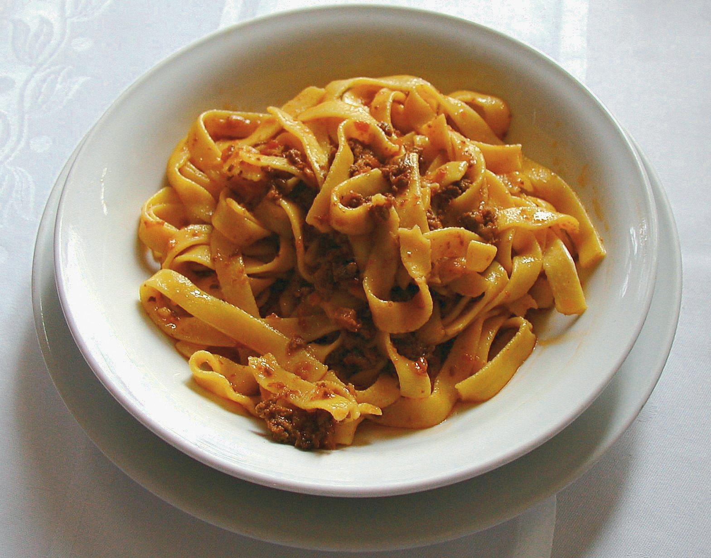

Alex's Recipe Book
Contents:
Spaghetti Bolognese
- Time: 1 hour
- Serves: 4
| Ingredients | Quantity |
|---|---|
| Olive oil | 1 table spoon |
| Medium onions | 2 |
| Beef mince | 500 g |
| Sprigs rosemarye | 2-3 |
| Spaghetti | 400 g |
| Parmesan | 75 g |
| Tins plum tomatoes | 2 x 400 g |
Step 1:Put a large saucepan on a medium heat and add 1 tbsp olive oil.
Step 2: Reduce the heat and add the 2 onions and the leaves from 2-3 sprigs rosemary, all finely chopped, then fry for 10 mins. Stir the veg often until it softens
Step 3: Increase the heat to medium-high, add 500g beef mince and cook stirring for 3-4 mins until the meat is browned all over.
Step 4: Add 2 tins plum tomatoes. Stir with a wooden spoon, breaking up the plum tomatoes.
Step 5: Bring to the boil, reduce to a gentle simmer and cover with a lid. Cook for 1 hr 15 mins stirring occasionally, until you have a rich, thick sauce.Add the 75g grated parmesan, check the seasoning and stir.
Step 6: When the bolognese is nearly finished, cook 400g spaghetti following the pack instructions.
Step 7: Drain the spaghetti and stir into the bolognese sauce. Serve with more grated parmesan, the remaining basil leaves and crusty bread, if you like.
Source: The best spaghetti bolognese recipe
Boiled eggs

- Time: 15 minutes
- Serves: 2
| Ingredients | Quantity |
|---|---|
| Eggs | 6-7 |
| Salt | 2 table spoons |
| Water | 1 L |
Step 1:Place eggs in the bottom of a saucepan. Be sure not to crowd the eggs in the pan. They should fit comfortably.
Step 2: Fill the pan with cold water, 1 inch above the eggs.
Step 3: Bring the water to a rapid boil on the stovetop over high heat.
Step 4: Once the water comes to a boil, cover the pan with a lid and remove the pan from the heat. Do not lift the lid. Set a timer for the type of boiled egg you want, from 4 minutes to 12 minutes.
Step 5: Fill a large bowl with ice and water.
Step 6: When the eggs reach the desired cooking time, use tongs to remove the eggs from the hot water and immerse gently into the prepared ice water to cool, about 10 minutes.
Step 7:Gently tap the eggs against a hard surface and peel away the shell. Rinse the egg under cold water to remove any bits of shell and pat dry.
Source: HOW TO BOIL EGGS
Prawn laksa curry bowl
- Time: 15 minutes
- Serves: 2
| Ingredients | Quantity |
|---|---|
| Olive oil | 1 table spoon |
| Red chilli | 1 |
| Thai red curry paste | 2 ½ table spoon |
| Vegetable stock cube | 1 |
| Coconut milk | 400 ml |
| Rice noodles | 100 g |
| Cooked king prawns | 150 g |
Step 1:Heat the oil in a medium saucepan and add the chilli. Cook for 1 min, then add the curry paste, stir and cook for 1 min more. Dissolve the stock cube in a large jug in 700ml boiling water, then pour into the pan and stir to combine. Tip in the coconut milk and bring to the boil.
Step 2: Add the fish sauce and a little seasoning. Toss in the noodles and cook for a further 3-4 mins until softening. Add the prawns and cook through until warm, about 2-3 mins.
Step 3: Serve.
Source: Prawn laksa curry bowl